O que já está decidido na interface
Cores nos dois temas, tipografia, espaçamento, componentes e padrões de tela do Conecta UFG. Quando alguém for criar uma tela nova, é aqui que confere o que não precisa ser decidido outra vez.
Onde o sistema é usado
Os dois perfis usam o sistema em condições bem diferentes, e quase toda decisão deste guia sai dessa diferença.
| Estudante | Orientador | |
|---|---|---|
| Onde | No corredor, na fila do R.U., no ônibus. Em pé, com uma mão só. | No gabinete, sentado, em sessão concentrada. |
| Aparelho | Celular quase sempre. Computador só para tarefa longa. | Computador de mesa, tela larga. |
| Tempo | Minutos entre uma aula e outra, com interrupção frequente. | Blocos de meia hora, na semana da triagem. |
| Frequência | Intensa nos períodos de edital, rara no resto do ano. | Duas ou três vezes por semestre. |
| Disposição | Alta para aplicativo de consumo, baixa paciência com sistema acadêmico. | Nenhuma paciência para aprender sistema novo. |
Quatro compromissos que atravessam o guia
Primeiro o celular
Alvo de toque confortável e nada que dependa de passar o mouse por cima.
Leitura em movimento
Corpo de 15,5 px e contraste alto.
Nada a aprender
Arranjos que a pessoa já conhece.
Interrupção barata
O estado fica sempre visível, para retomar sem reconstruir nada.
Marca
O selo é um “c” sobre o azul-cobalto, com o ipê amarelo no canto. Há versões para fundo claro e para fundo escuro, e a logo do Instituto de Informática acompanha.
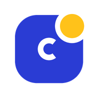
Cores
Uma cor de marca, uma de destaque e três de estado. Tudo o mais é neutro. Cada token tem um par no tema escuro: a metade esquerda de cada amostra é o tema claro, a direita é o escuro. Clique no valor para copiar.
Marca e destaque
Neutros
Estado
Regras de uso
Cor nunca vem sozinha
Toda etiqueta colorida traz texto. Quem não distingue as cores continua entendendo a tela.
4,5 : 1 no mínimo
Contraste mínimo para texto, nos dois temas.
Se tudo é azul, nada é azul
A marca fica reservada para ação primária, seção atual e links.
Ipê é atenção
Etapa atual e prazo curto. Usá-lo como enfeite tira o peso de quando ele importa.
Contraste medido
A razão de contraste é calculada nesta página, a partir dos próprios tokens, pela fórmula da WCAG 2.1. O mínimo para texto normal é 4,5 : 1. Para texto grande ou negrito acima de 18,7 px, é 3 : 1.
| Par | Onde aparece | Tema claro | Tema escuro |
|---|
Nunito, hierarquia por peso
Uma família em toda a interface. A hierarquia é construída por peso, não por tamanho, e por isso o 900 de verdade da Nunito fazia diferença. Os números usam variante tabular, para a contagem não “dançar” ao mudar de 9 para 10. Nada é escrito abaixo de 12,5 px. Entrelinha de 1,5 no corpo e 1,2 nos títulos.
Espaço, raio e sombra
O espaçamento usa uma escala fechada, e nada fora dela. É o que faz telas diferentes parecerem do mesmo produto.
Escala de espaçamento
Em pixels.
Raios
Do campo à faixa do herói.
Sombras
Grid e janelas
Faixa central de até 1140 px, com 20 px de margem lateral no computador e 16 no celular. Acima dessa largura a linha de texto fica longa demais. O vão entre colunas é de 14 px.
1 coluna
Celular, e listas em qualquer largura.
2 colunas
Resultados de busca, projetos.
3 colunas
Recomendações e agenda.
4 colunas
Números do painel do orientador.
Hub de busca
250 px de filtros, o resto para resultados. Tela de vagas.
Quadro por etapa
Cinco colunas de 214 px, com rolagem horizontal. Candidatos.
Informação secundária aparece em folha: no computador desliza pela direita com 560 px; no celular sobe de baixo até 92% da altura. Um véu escurece o fundo, Esc fecha e o foco fica preso dentro da folha enquanto ela estiver aberta.
Ícones
Grade de 20 × 20, traço de 2 px, pontas arredondadas e sem preenchimento. O traço acompanha a cor do texto ao lado. Ícone não carrega significado sozinho: todo ícone vem com texto visível. As exceções são fechar, buscar e voltar, que levam rótulo invisível para leitor de tela.
O movimento explica de onde a coisa veio
A folha desliza da direita porque vem da direita. O aviso sobe porque entra por baixo. Nada que precise ser lido entra animado, nenhuma animação passa de 0,26 s, e todas viram praticamente zero quando o sistema pede menos movimento. Clique em cada quadro para reproduzir.
Componentes
Os exemplos abaixo funcionam: dá para preencher, marcar e acionar.
Ativação: quatro níveis de botão
Primário
No máximo um por tela ou por folha. Clique para ver o estado de espera.
Secundário
Ações alternativas.
Fantasma
Cancelar, voltar, descartar.
Perigo
Desistir, excluir, retirar. Clique: executa e oferece Desfazer.
O rótulo nomeia a ação do ponto de vista de quem clica: Quero me candidatar e Enviar candidatura, nunca OK ou Confirmar soltos. A resposta aparece em até 0,4 s; quando demora mais, o próprio botão assume o estado de espera.
Preenchimento de campos
De 0 a 10, com vírgula. A média global pondera cada nota pela carga horária.
Use um valor entre 0 e 10.
Ajuda o orientador a conhecer sua trajetória.
As regras
- O rótulo fica acima e permanece visível depois de preenchido.
- A ajuda vem entre o rótulo e o campo, porque precisa ser lida antes de escrever.
- O texto dentro do campo é exemplo, nunca rótulo.
- A validação acontece ao sair do campo, não a cada tecla. Digite 12 e saia do campo ao lado.
- A mensagem de erro diz o que corrigir, fica junto do campo e não bloqueia a digitação.
- Opcional é marcado como opcional. Obrigatório não leva asterisco, porque o padrão é obrigatório.
Seleção
Caixa de marcação
Escolha múltipla, até oito opções visíveis, com a contagem ao lado.
Opção em pílula
Escolha exclusiva, até três opções curtas. A marcada muda fundo, cor e peso.
Lista suspensa
Escolha exclusiva com cinco opções ou mais. A primeira entrada é um convite.
Etiquetas de estado
Mesma pílula, mesmo raio, mesmo peso: só a cor muda, e o texto sempre diz o estado (Gestalt, similaridade · marcador 5).
Quatro estilos de interação
Cada um na tarefa em que rende mais. Linguagem de comando e linguagem natural ficaram de fora: a primeira exige memorizar sintaxe, a segunda torna imprevisível o resultado de uma busca que sustenta a decisão de se candidatar.
Tela inicial e vagas. Quando a pessoa sabe o que procura, digitar é mais rápido do que percorrer menu.
Abas, filtros e listas. Quando ela não sabe o que procura, a lista mostra o que existe.
Publicação de vaga e perfil. Muitos campos, validação por campo para evitar retrabalho.
Quadro de candidatos. O cartão que muda de coluna é a mesma metáfora da triagem real.
Todo caminho com ponteiro tem equivalente no teclado
| Tab Shift+Tab | Percorre os elementos na ordem de leitura |
| Enter | Abre a lista de resultados a partir da busca |
| Esc | Fecha a folha e devolve o foco ao ponto de origem |
| ← → | Move o candidato entre colunas do quadro |
| Primeiro Tab | Revela o atalho “Pular para o conteúdo”. Experimente nesta página. |
A língua da universidade, não a do mercado
O LinkedIn serviu de referência de estrutura, não de linguagem.
| Usamos | Não usamos | Por quê |
|---|---|---|
| vaga, oportunidade | Não é relação de trabalho, é formação acadêmica. | |
| orientador | O papel é de orientação, e o vínculo é acadêmico. | |
| média global | É como o índice aparece no histórico escolar. | |
| inscrição, candidatura | Anglicismo desnecessário; inscrição é o termo dos editais. | |
| unidade | Unidade acadêmica é a divisão que a universidade usa. | |
| bolsa | Bolsa tem regime próprio e não gera vínculo. | |
| você | A interface fala com a pessoa, não sobre ela. |
Siglas: sempre com o nome por extenso na folha de detalhe
Programa Institucional de Bolsas de Iniciação Científica, modalidade do PIP-UFG
Programa Institucional Voluntário de Iniciação Científica, modalidade do PIP-UFG
Programa Institucional de Bolsas de Iniciação em Desenvolvimento Tecnológico e Inovação, modalidade do PIP-UFG
Programa de Bolsas de Extensão e Cultura, da Pró-Reitoria de Extensão e Cultura
Programa de Voluntário de Extensão e Cultura, da Pró-Reitoria de Extensão e Cultura
Seis tipos de tela
Toda tela do sistema é um destes seis. Tela que não couber em nenhum vira um tipo novo, registrado no guia.
Painel inicial
Herói com a ação principal e seções com atalho para a lista completa. Início do estudante, painel do orientador.
Lista com filtros
Filtros, busca, contagem e resultados em grade. Vagas.
Lista simples
Cabeçalho e itens em linha, com estado à direita. Inscrições, avisos, agenda.
Folha de detalhe
Etiquetas e título no topo, corpo em blocos, rodapé fixo com a ação. Vaga, candidatura, evento.
Formulário em passos
Barra de progresso, um grupo de campos por passo, revisão no fim. Publicar vaga.
Quadro por etapa
Colunas nomeadas com cartões movíveis. Candidatos.
Sequências de diálogo
Ação destrutiva ou que alcança outra pessoa pede confirmação antes, ou executa e oferece Desfazer. Candidatar-se pede confirmação, porque envia dados a um terceiro. Mover candidato no quadro executa e oferece desfazer, porque é reversível e acontece dezenas de vezes seguidas.
As telas, com e sem marcadores
Capturas do protótipo navegável. Com os marcadores ligados (botão IHC no protótipo), cada número aponta um princípio, diretriz ou critério aplicado. Clique numa imagem para abrir em tamanho real.

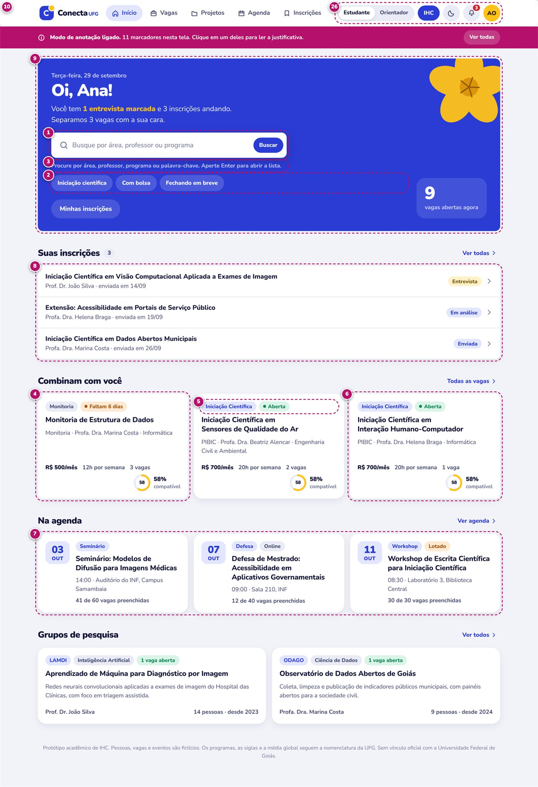

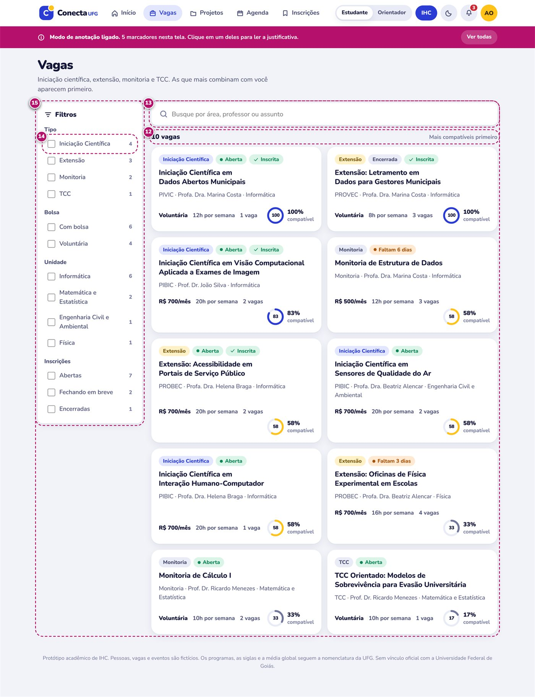

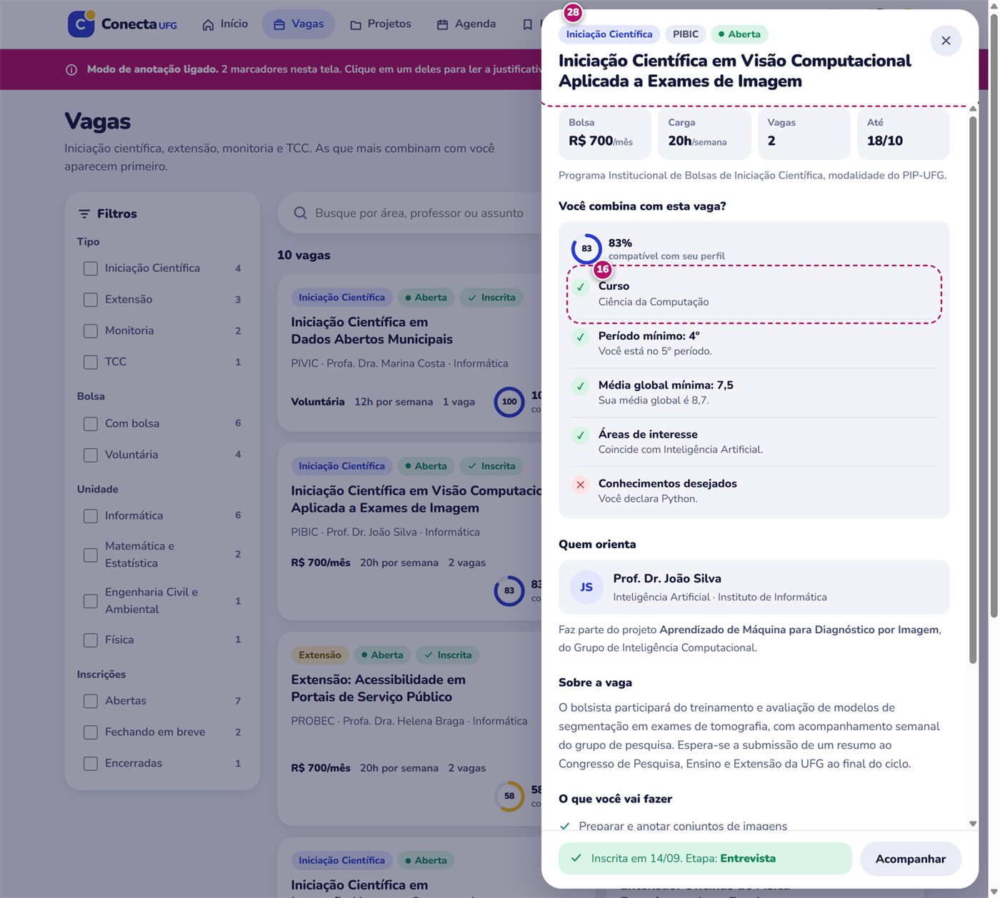

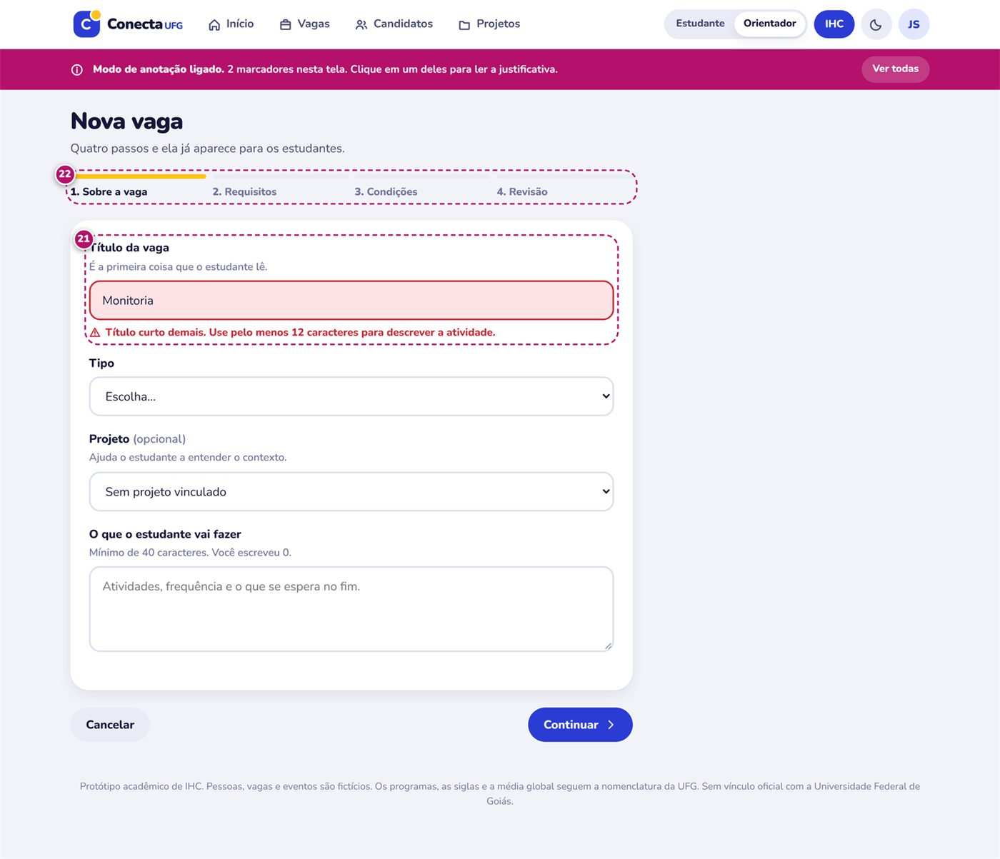

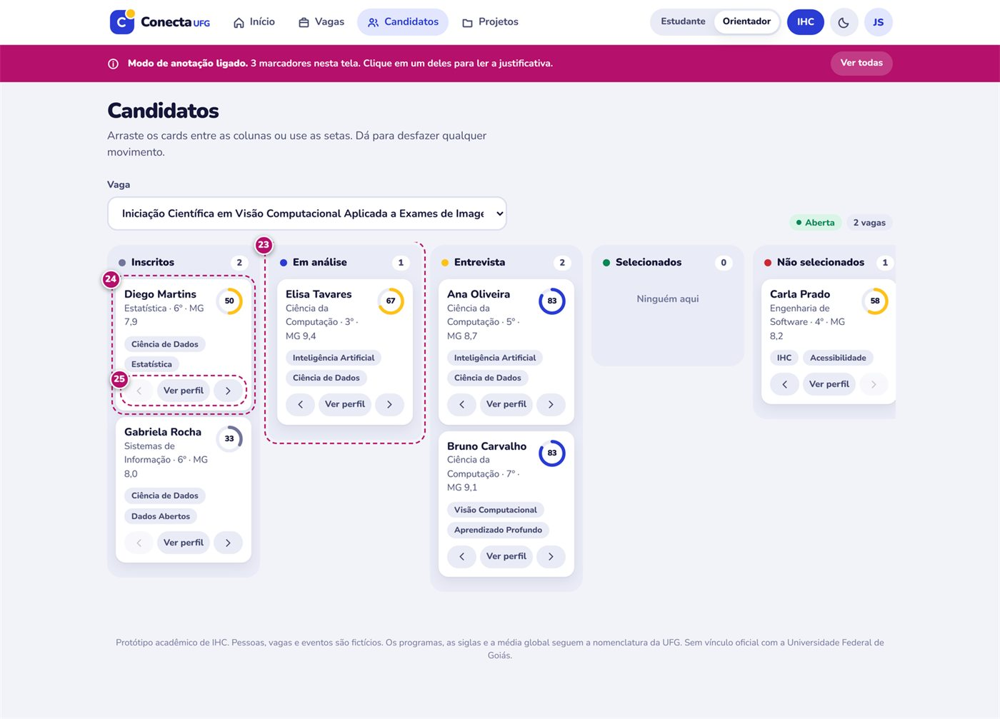

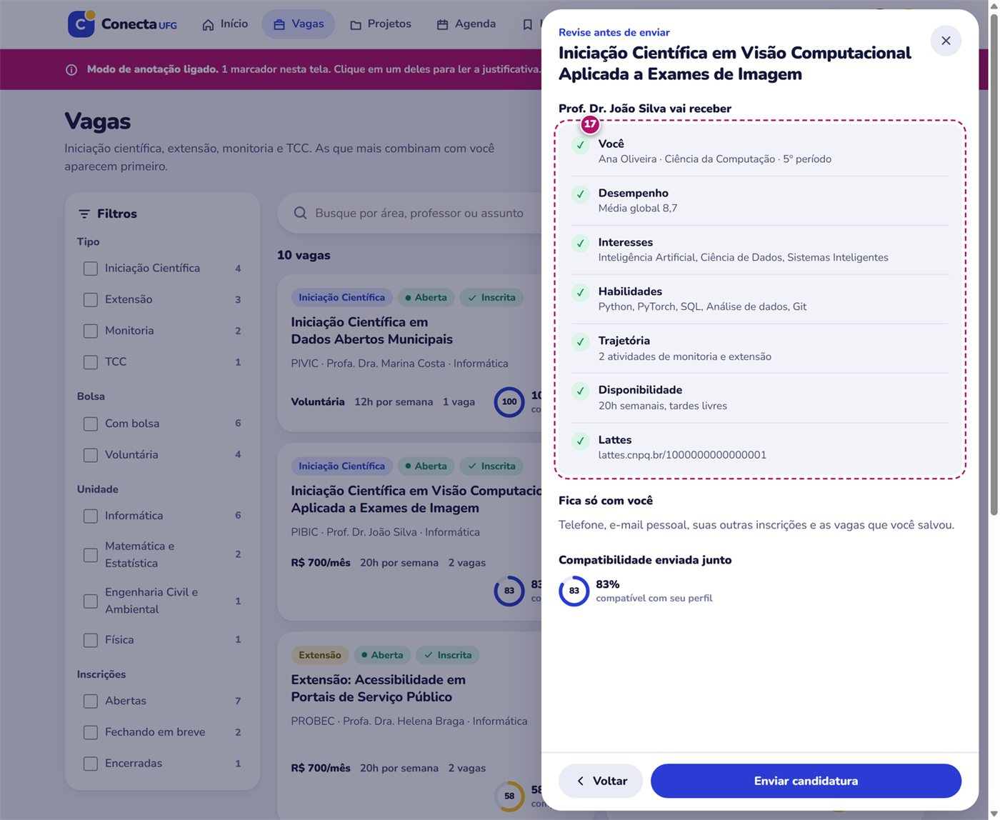

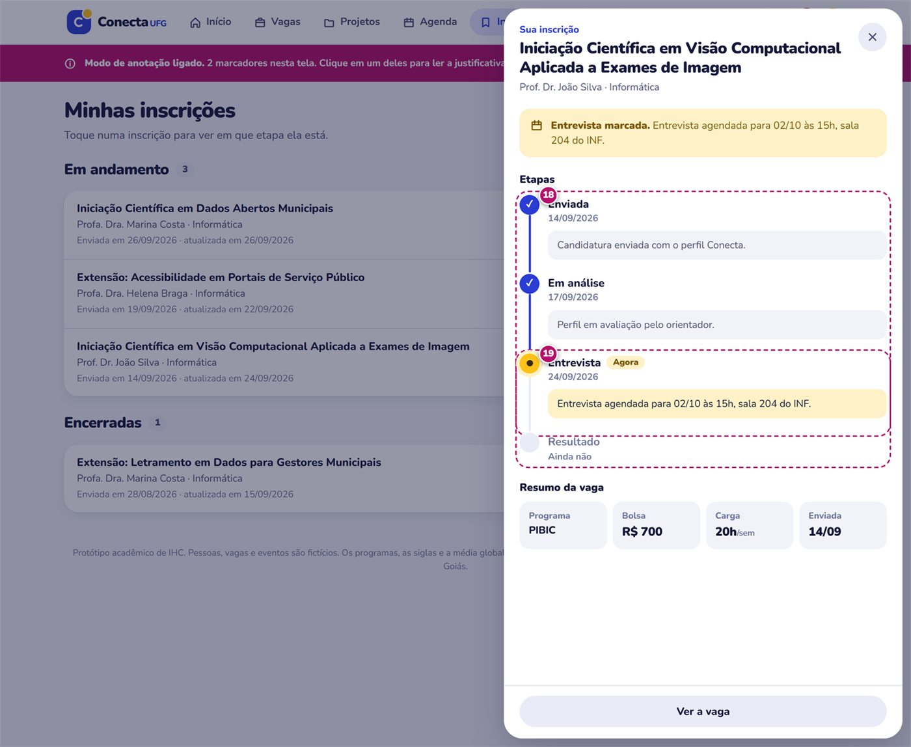

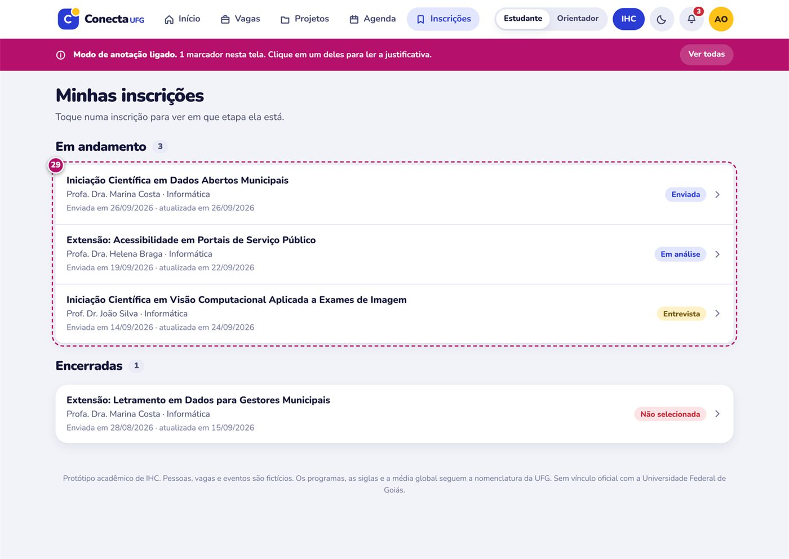

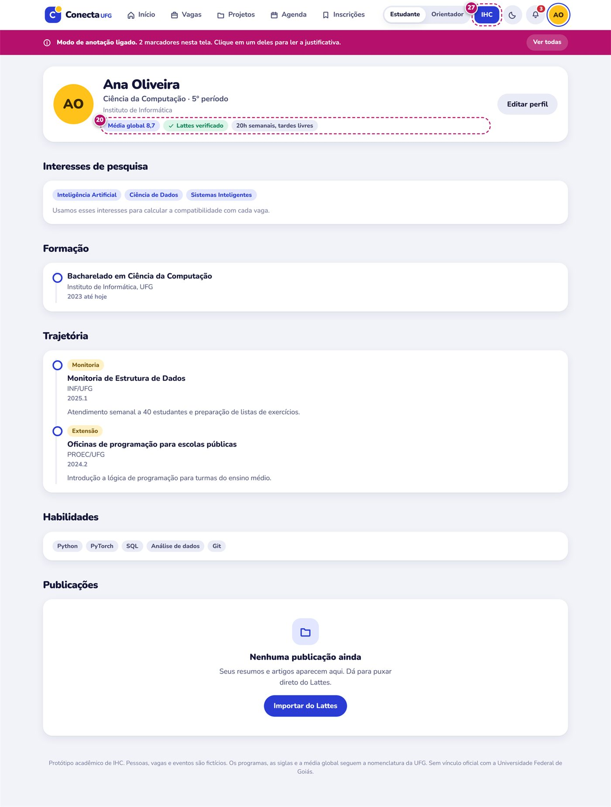

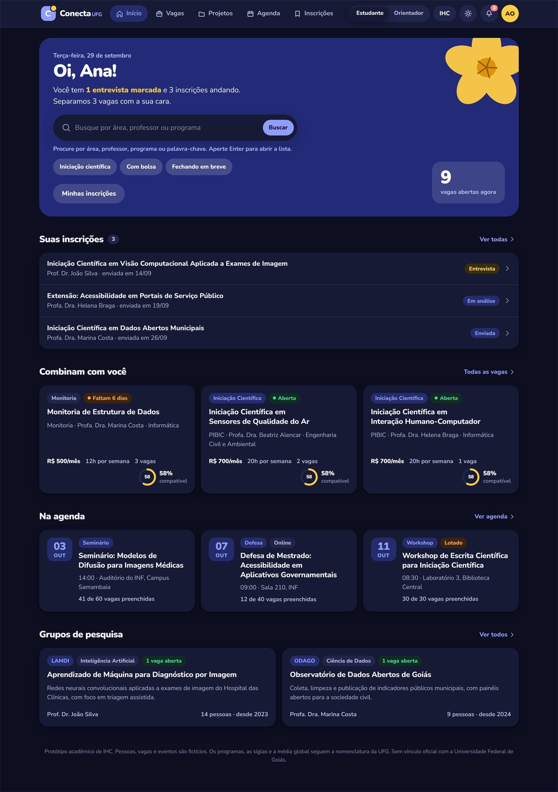
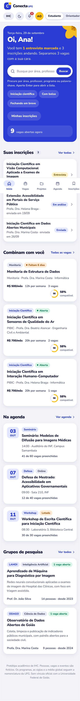
No celular
A grade passa a uma coluna, a navegação desce para a barra inferior e os alvos de toque mantêm a altura mínima de 44 px. Role dentro do aparelho para ver a tela inteira.
O protótipo é um arquivo único em HTML, CSS e JavaScript: a busca busca, os filtros se combinam e a compatibilidade é calculada. É isso que permite a uma pessoa completar uma tarefa nele, e não só olhar telas.

Os 29 marcadores de IHC
No protótipo, o botão IHC liga marcadores numerados sobre a interface; clicar num deles abre a justificativa e a fonte. O modo vem desligado por padrão, para não interferir na avaliação. Mostrando 29 marcadores.
| Nº | Princípio ou critério | Categoria | Tela |
|---|